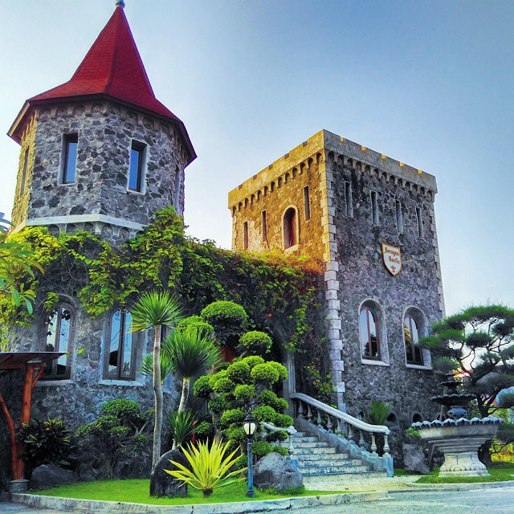

Makan Enak ala kerajaan kuno di Soragan Castle!
Soragan Castle yang nama lengkapnya adalah Gubug Makan Mang Engking Soragan Castle adalah sebuah tempat makan bernuansa kerajaan kerajaan kuno, bentuk bangunannya persis dibuat seperti kastil beneran, ukuran nya sih enggak sebesar kastil kastil beneran, tapi nuansanya dapet! Dengan konsep ini, Soragan Castle menjadi satu satunya tempat makan bergaya kastil kuno di Jogja.
Soragan castle ini mulai ngehits di tahun 2016, foto foto kastil ini menyebar luas menghiasi instagram, kebanyakan yang melihat akan bertanya "di mana ini?". Dan saat ini semakin banyak pengunjung yang mulai hanya berfoto sambil makan di restonya sampai prewed juga ada.
Selain bangunannya unik, lingkungannya juga sejuk, dihiasi tanaman tanaman yang menyegarkan mata. Pengunjung juga bebas untuk memilih tempat duduk, bisa di indoor atau outdoor.
Daftar Menu makanan di Soragan Castle Godean
Menu makanannya didominasi oleh seafood, harganya standar restoran mulai dari Rp 4.500 (nasi putih) - Rp 80.000 (Udang bakar madu). Menu recommendednya adalah Udang saus padang dan Gurame bakar madu. Selengkapnya yuk lihat menunya berikut
Di mana lokasi Gubug Makan Mang Engking (Soragan Castle)?
Gubug makan mang Engking ada beberapa lho di Jogja, jadi jangan sampai salah, Gubug makan mang Engking dengan bangunan kastil ini beralamat di :
Jalan Soragan No. 13. Dari pusat kota, ambil arah jalan Godean, perempatan lampu merah Mirota jalan Godean belok kiri. Dari perempatan sekitar 200 meter lagi dan berada di kiri jalan.
